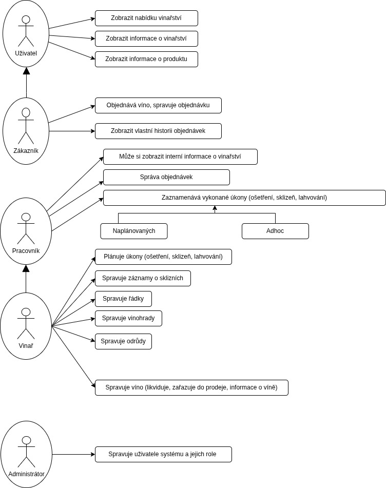

V našem sytému, může mít uživatel vícero rolí. Vícero rolí bylo přidáno, z důvodu toho aby například vinař si nemusel dělat nový účet pro nákup vína. Přidávání a odebírání rolí zůstává umožňuje pouze role Admin.
| Login | Heslo | Role |
|---|---|---|
| andrej | 111111111 | Admin, Vinař, Pracovník, Uživatel |
| josef | 111111111 | Uživatel, Pracovník, Vinař |
| pecinka | 111111111 | Pracovník, Vinař |
| bohumil | 111111111 | Uživatel |
| vacha | 111111111 | Uživatel |
| tabula | 111111111 | Pracovník, Uživatel |
| frejlich | 111111111 | Uživatel |

Jak je zmíněno níže, projekt je implementován ve frameworku Nette a v zásadě dodržuje výchozí adresářovou strukturu a architekturu použitou v tomto frameworku (MVC, Repozitáře, ...).
V adresáři www se nachází veřejně přístupná sekce se vstupním skriptem index.php, který inicializuje
framework Nette a následně dojde k přeroutování na příslušné kontrolery a šablony. Dále se zde nachází složka assets s dalšími zdroji (obrázky, styly, ...).
Nejdůležitější je v ní složka uploads, do které jsou nahrávány uživateli spravováné obrázky.
V adresáři app je vlastní implementace aplikace. V ní nacházející se soubor Bootstrap.php inicializuje prostředí a nastavuje konfiguraci. V souboru
Core/RouterFactory.php je implementace routeru. Tyto dva soubory byly převzaty z výchozího projektu Nette a pouze minimálně upraveny. Dále se zde nacházejí dvě důležité složky
Model (interní model a repozitáře komunikující s databází) a Presentation (prezentační logika a šablony aplikace).
V adresáři app/Model se v jednotlivých jmenných prostorech nacházejí interní modely pro jednotlivé části aplikace a k nim potřebné repozitáře pro práci s databází.
Příkladem může být složka Vineyard, která obsahuje soubor Vineyard.php obsahující interní model reprezentující jeden vinohrad v systému a k němu potřebný soubor
realizující repozitář VineyardRepository.php, který umožňuje načítání vinohradů z databáze, jejich úpravu, vytváření, atd. Dalšími takovými entitami jsou Bottle, Image, OrderItem,
Orders, Profile, Security, Shop, User, Validation, Wine, WineRow a WineVariety.
V adresáři app/Presentation se nachází prezentační logika a šablony aplikace opět rozdělena do jednotlivých logických celků a jmennných prostorů. V souboru @layout.latte
je základní struktura webové stránky. Následně v jednotlivých složkách jsou části implementující jednotlivé případy použití a používané komponenty. Každá tato složka (pokud se nedělí na podčásti)
obsahuje vždy svůj presenter a k němu jeho latte šablony. Příkladem může být složka Home, která obsahuje latte šablonu default.latte a její HomePresenter.php
, která implementuje domovskou stránku aplikace. Informační systém, do kterého mají přístup pouze zaměstnanci se nachází ve složce IS.
Zbytek adresářů vychází z obvyklé struktury frameworku Nette.
Stručná dokumentace k implementaci, která popisuje, které části projektu (např. PHP skripty) implementují jednotlivé případy použití.


Projekt využívá framework Nette. Použitá verze Nette je 3.2.3. PHP je použito ve verzi 8.3. Pro databázi bylo využito MySQL (mariadb).
Pro jednotné stylování aplikace byl použit framework Bootstrap ve verzi 5.3. Pro ikony byla použita knihovna Font Awesome ve verzi 7. Výchozí obrázky
byly převzaty z internetu. Odkazy na všechny jsou uvedeny v souboru images.md.
Naprostá většina funkcionality je napsána v rámci frameworku Nette - jazyk PHP a latte šablony. Nad rámec stylů z knihovny Bootstrap bylo nadefinováno i několik vlastních CSS stylů. Ojediněle byl využit i JavaScript.
Pro testovací i produkční nasazení je možno využít docker compose.
docker compose up --build v kořenovém adresáři projektuhttps://localhost:8080https://localhost:8001.htaccess soubor tak, aby obsahoval správnou cestu pro přepsání všech přístupů
do podadresáře www/. Upravte RewriteRule ^.*$ /~xlogin00/IIS/www/ [R=302,L] například na
RewriteRule ^.*$ /~xlogin00/IIS/www/ [R=302,L]. Případně pro jiná nasazení upravte dle potřeby.log, temp a temp/sessions v kořenovém adresáři aplikace
composer install v kořenovém adresáři projektudb/definitions.sqlconfig/common.neonchmod -R o=rX,g= ~/WWW